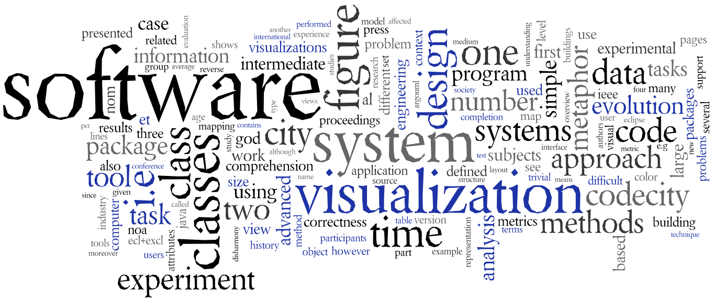

Present
I am a software engineer, currently working at PostFinance in Bern, Switzerland.
In my spare time, I continue my work on CodeCity, a visualization project I started as a Ph.D. student.
I am a software engineer, currently working at PostFinance in Bern, Switzerland.
In my spare time, I continue my work on CodeCity, a visualization project I started as a Ph.D. student.
Before this, I worked as a software engineer at CompuGroup Medical Schweiz, where I had the privilege to work with Tudor Girba and apply humane assessment techniques to deal with the challenges that we face when developing large software systems.
I earned my Ph.D. in September 2010 from the Faculty of Informatics at the University of Lugano, Switzerland. The research I conducted there, guided by Prof. Michele Lanza, was mainly directed on software evolution, reengineering and reverse engineering, with a special focus on software visualization. I explored the potential of the city metaphor for the analysis of large evolving software systems by means of visualization and implemented a tool called CodeCity. My work on this topic, described in a number of publications, is synthesized in my Ph.D. thesis, entitled "Software Systems as Cities", described through the following word cloud:

Before that, I earned both my Engineering Diploma (2004) and Master's Diploma (2005) from the Faculty of Automatics and Computer Science at the "Politehnica" University of Timisoara, Romania. During the last years of undergraduate study, I was member of the LOOSE Research Group. Guided by Prof. Radu Marinescu, I worked on code clone detection and implemented a tool called DuDe. I was also a Junior Researcher at the e-Austria research institute in Timisoara.
In between and after my graduate studies, I took several software engineering positions, cummulating over 6 years of experience in the software industry. Always in touch with the industry, I was able to apply the analytical skills developed as a researcher to the unique engineering challenges of the software systems I worked on (industrial automation, public transportation, life insurance, or health care).
For an extended professional profile, please take a look at my CV.
My homepage has moved to github.
In his new book Your Code As a Crime Scene, Adam Tornhill presents CodeCity, his favorite tool when it comes to the geography of code.
CodeCity has been featured in the beautiful Book of Trees, by Manuel Lima.